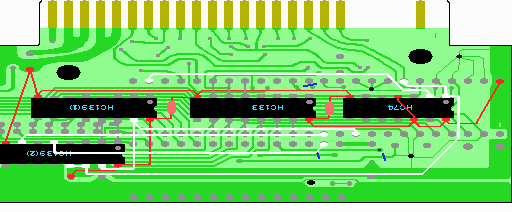

11．配線の山場（１／４）
ここからが配線の山場です。ここでの配線は回路図で青でかかれている部分です。

回路図を見れば分かりますが、実体図で直交している線同士はつながっていないので注意してください。
1. まず2212P003の42ピンにスロットからの/RESET信号が来ていますので、それをHC74の1ピンにつなげ、さらにHC139(2)の13、14ピンにつなげます。
2. 同様に2212P003の26ピンにスロットからのD4信号が来ていますので、それをHC74の2ピンにつなげます。
3. 2212P003の12ピン(/WR)とHC139(2)の7ピンをつなげます。
5. SRAMの29ピン(/WE)とHC139(2)の5ピンをつなげます。
6. 最後に2212P003の10ピンにスロットからの/SLTSL信号が来ていますので、それをHC139(1)の15ピンにつなげます。
そしてHC139(1)の15ピンからさらにHC139(2)の15ピンにつなげます。
 次へ
次へ